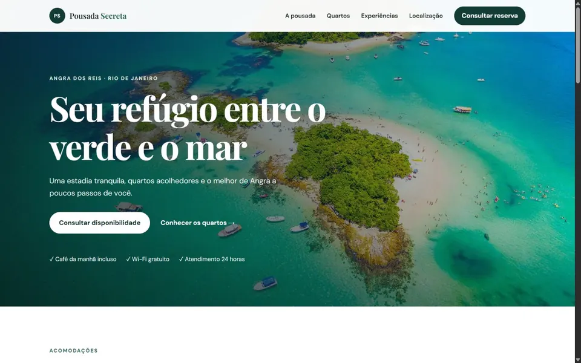
Hospedagem
Pousada Secreta
Página inspiradora para apresentar acomodações, experiências, localização e receber pedidos de reserva.
- Acomodações e comodidades
- Galeria de experiências
- Contato para reservas
Projetos selecionados
Conheça modelos criados para diferentes segmentos. Cada projeto é adaptado ao conteúdo, à identidade e ao objetivo do seu negócio.

Hospedagem
Página inspiradora para apresentar acomodações, experiências, localização e receber pedidos de reserva.
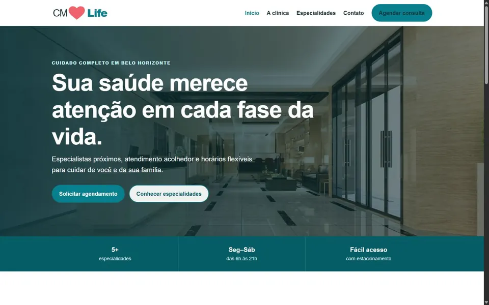
Saúde
Estrutura clara e confiável para apresentar especialidades, profissionais e opções de agendamento.
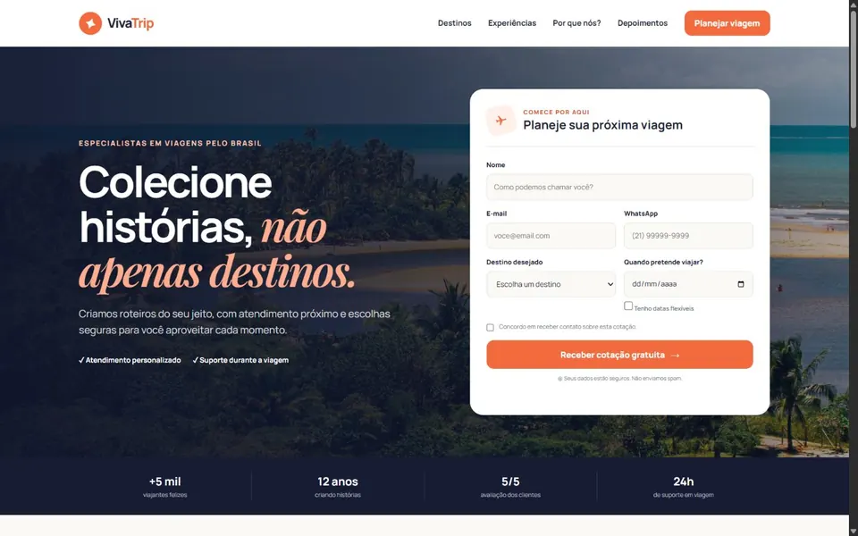
Turismo
Landing page visual para apresentar destinos, diferenciais e captar pedidos de cotação.
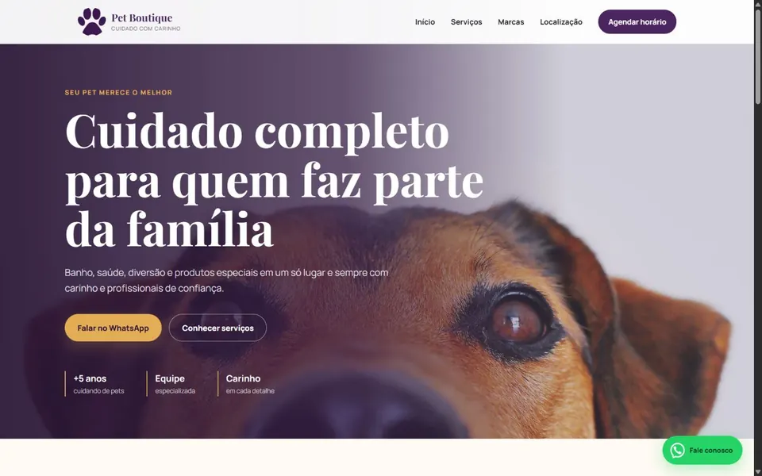
Pet shop
Visual elegante para apresentar cuidados, serviços e produtos, com contato rápido para agendamento.
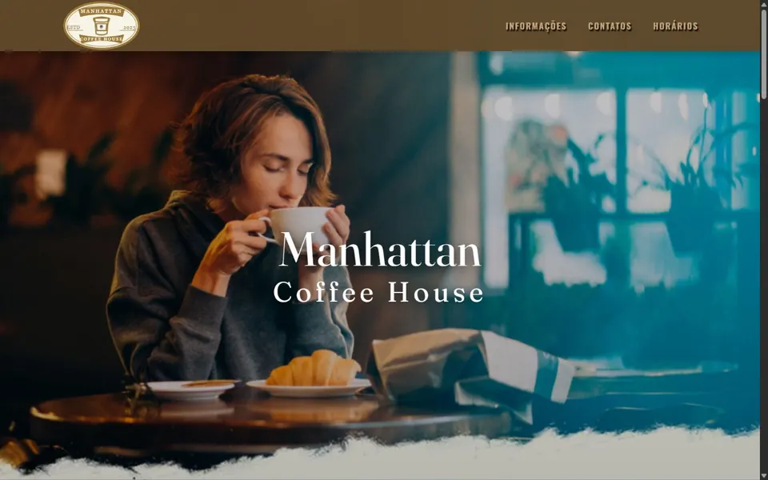
Alimentação
Experiência visual para despertar interesse e apresentar ambiente, endereço e horários.
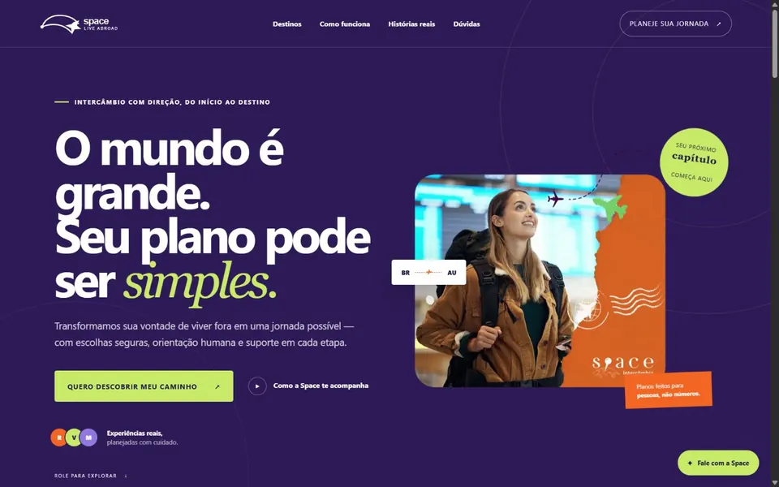
Intercâmbio
Projeto voltado à apresentação de experiências internacionais, destinos e oportunidades no exterior.
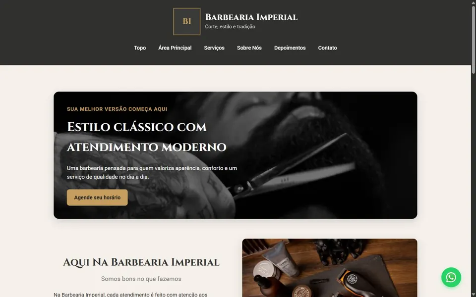
Barbearia
Projeto visual para apresentar serviços, estilo e informações essenciais do estabelecimento.
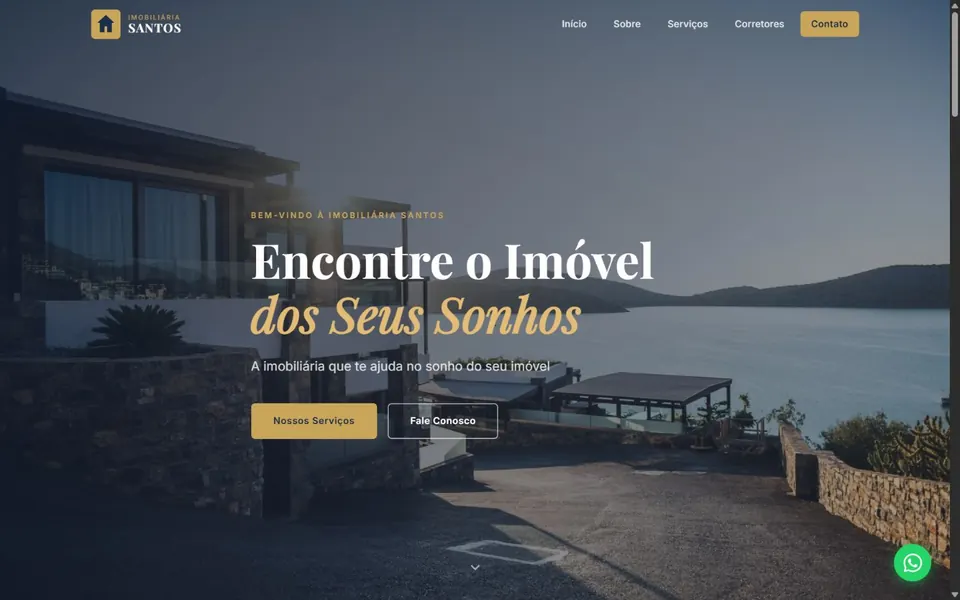
Imobiliária
Site institucional elegante para apresentar imóveis, serviços e facilitar o contato com clientes.
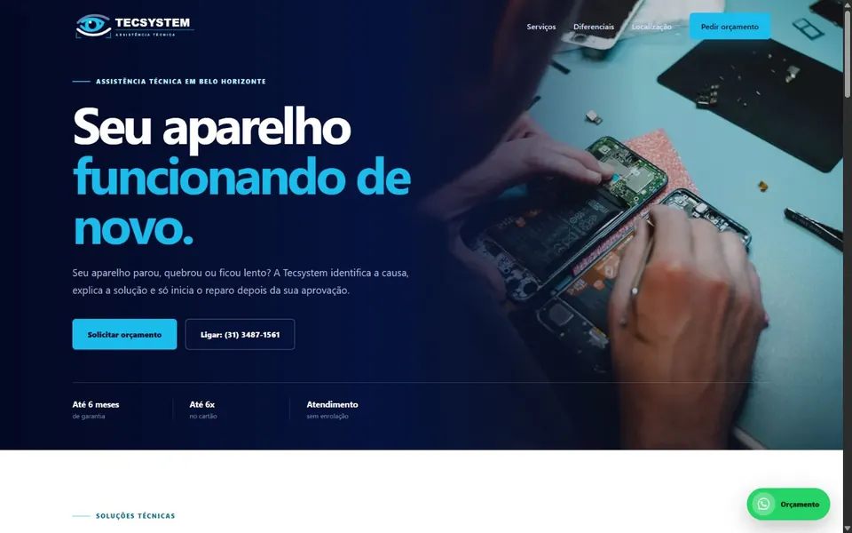
Assistência técnica
Página comercial para explicar soluções técnicas e transformar visitas em pedidos de orçamento.
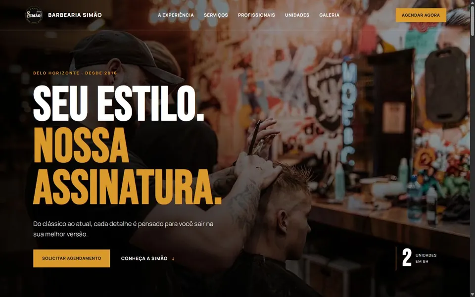
Barbearia
Presença digital marcante para apresentar serviços, profissionais, unidades e facilitar agendamentos.
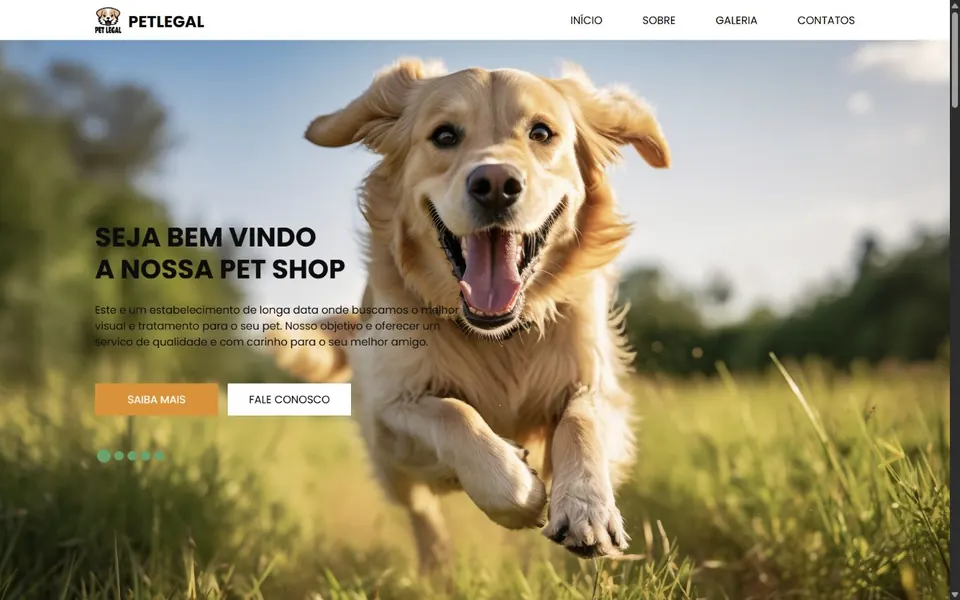
Pet shop
Site acolhedor para apresentar serviços, localização e informações importantes para tutores de animais.
Projeto personalizado
Usamos o modelo como referência e criamos uma página alinhada à identidade do seu negócio.
A partir de R$ 349,90
Vamos conversar
Ao enviar, sua solicitação será preparada no WhatsApp.